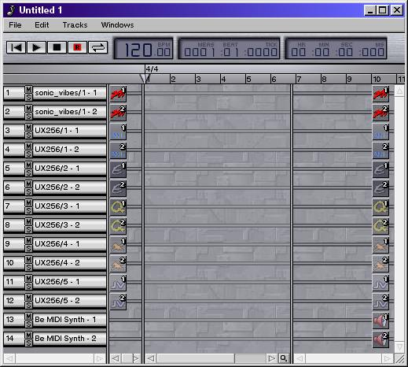

2. The Song Window

The song window
The song window provides an overview of your song. A song is defined by tracks, the phrases in each track, and the performance data in each phrase. This window allows you to quickly move and restructure phrases. The song window contains the following controls:
- Familiar transport controls for song playback.
- An LCD that displays tempo and current time information.
- A measure control.
- The tracks in the song.
- A zoom control.
The song window includes several buttons for controlling playback, recording, and
looping. These buttons are analagous to the play, stop and record buttons found on a
tape deck.
|
Rewind. Rewind the song position to the beginning of the song. |
 |
Play. Play the entire song from the current song position. The song position is indicated by the arrow in the measure control. |
 |
Stop. Stop playback. This will also (in most cases) stop any stuck notes that are playing. |
|
Record Mode. Toggle record mode on or off. See section 2.1.1. Recording, below. |
 |
Loop Mode. Toggle loop mode on or off. See section 2.1.2. Looping, below. |
2.1.1. Recording
To record a new phrase, follow these steps:
- Verify that the track you will record to has the appropriate input filter placed in its input pipeline. See Appendix A. The Filters for a description of the different types of filters. The input pipeline is covered later in this section.
- Select the track (or tracks) to record by clicking on the track number. Clicking on the track number will highlight the entire track, and recording will continue until the Stop button is pressed. If you only want to record during a certain section, after clicking the track number, narrow the selection by clicking and dragging in the measure control.
- Place the song in record mode by clicking the Record button in the transport controls. The Record button will stay depressed until you stop recording. When recording is enabled, the yellow highlight turns red.
- To begin recording, click the Play button. As you play your instrument, you should see the phrase view update with your performance. You should also hear what you play from whatever MIDI devices are specified by the selected tracks.
Each time you make a new recording, a new phrase is created to store your performance. If any phrases already existed that overlap with your new performance, they will still exist, although they may be hidden by the new phrase. You can combine your new phrase with the old by selecting the track and time range to be combined, then using the menu command Edit -> Merge Phrases.
2.1.2. Looping
When the Loop button is activated, start and end loop markers appear in the top line of the measure control. Loop mode is intended to be transitory: You turn loop mode on when you want to compose a passage by continually layering it, then you turn loop mode off again.
By default, the loop begins at the first completely visible measure and ends at the last completely visible measure. You can drag the markers to select a new loop range, but if you turn off loop mode, enable it again, and one or both of the markers are beyond the bounds of the phrase view, then the markers will again be placed to align with the first and last completely visible measures.
2.1.3. Keyboard Control
The transport controls can also be activated from the keyboard.
- The ENTER key of your numeric keypad starts playing the song from the current song position. If the song was already playing, this key stops playback.
- The 0 key on the numeric keypad starts playing the song from the beginning. If the song was already playing, this key stops playback.
- The . (period) key on the numeric keypad toggles record mode on or off.
The LCD display shows current tempo, location, and time information. Tempo can be changed by clicking anywhere on the tempo display and dragging (precise tempo editing can be done in the Tempo window). Location displays the song position's current measures, beats, and ticks. Time displays the song position's current hours, minutes, seconds, and milliseconds.
The measure control serves several purposes:
- It displays time signature information in the top half. The time signature can be changed by using the PopUp Menu, described below.
- It displays measure numbers in the lower half to indicate your location in the song.
- It displays the current song position.
- It displays the current loop points.
- It displays the current selection range in yellow (or red if recording is enabled).
The beginning and end of the song are always in view, along with the song position marker, loop markers, and the selection range: The left and right sides of the measure control scale so that the far left of the control is always the first beat of the first measure, and the far right is always the end of the song.
The song position marks the song's current playback time. If the song is playing, the position travels with it. If it's not playing, the position indicates where playback will begin when you press the Play button.
If the song is not playing, you can click and drag the position marker and place it wherever you like. You don't need to worry about dragging it beyond the edges of the measure control: The marker will refuse to go beyond the song's boundaries.
The loop markers are activated by the Loop button in the transport controls. Whenever the loop markers are visible, the song will loop over the defined selection. For more information, see section 2.1.2. Looping.
2.3.3. The Selection Range
The selection range can be changed by clicking and dragging anywhere in the measure control (other than the song position and loop markers). As you drag, the selection will change by whole measures. The selection can be added to by holding down SHIFT before clicking.
The selection range defines the area that the Edit menu commands will operate on.
2.3.4. The PopUp Menu
Pressing the right mouse button anywhere in the measure control will invoke a popup menu that allows you to change the time signature for the selected measure. You can choose from several predefined signatures, or select a different signature by choosing the Other... command. This will open a Set Signature window.
The simplest way to think of a track is as a single instrument, plus the performance data for that instrument. In the song window, each track displays the following information:
- A track number that is unique for this track in the song.
- Mode buttons to mute or solo the track.
- A track name to identify the track.
- An input pipeline to record and process events from keyboards and other MIDI controllers.
- A phrase view that displays the performance data.
- An output pipeline to process and play back the performance.
2.4.1 The Track Number
A unique number for this track in the song. By clicking on the track number, you can select the entire track. Drag up or down to select multiple tracks, or shift-click and drag to invert you selection.
2.4.2. The Mode Buttons
These buttons toggle certain track properties on or off. The two buttons are labeled with the first letter of their names: Mute and Solo. When the buttons are off, they share a uniform gray colour. When a button is on, it has a unique colour. By default, both buttons are off.
- Mute. When on, this track will not be heard during playback. Tracks that are
muted are displayed in a slightly darker colour.
- Solo. When any track has solo on, then only those tracks with solo on are
heard during playback. Solo overrides mute.
2.4.3. The Track Name
To change the name of a track, click on it and wait. After a moment, a text control will appear and you can type any changes. Additionally, right-clicking on the track name will display a menu to let you open a new track window to edit this track, or remove the track from the song.
2.4.4. The Input Pipeline
The input pipeline allows you to choose which MIDI controller to record data from. The filters in the pipeline must all be through filters, except for the very first, which must be an input filter. When the mouse is in the pipeline, the filter slot underneath the mouse highlights, and a property button appears in the top left corner. This property button can perform various operations on the filter, such as adding a new one to the pipeline, changing an existing filter to a different filter, removing it from the pipeline, etc. For more information on working with pipelines, see Pipelines.
2.4.5. The Phrase View
This view displays the actual performance data for the track. It can also be used to quickly rearrange pieces of the song. By clicking on a phrase and dragging, you can move that phrase to a different time, a different track in the song, or a track in a different song. On a two- or three-button mouse, clicking with the left button and dragging will move the selected area. Clicking with the right button and dragging will open a popup menu that allows you to copy the selected area. You can access specific phrase properties by right-clicking on a phrase and holding. A menu will appear that lets you open the Phrase Properties window.
2.4.6. The Output Pipeline
The output pipeline allows you to choose which MIDI device will perform the track. The filters in this pipeline must all be through filters, except for the very last, which must be an output filter. The easiest way to add filters is the same as the input pipeline: Click the filter property button where you want to add the filter, and select the desired filter from the Change To menu. The Change To menu will only display filters that are valid for the selected position.
When invoking the Change To menu on the output filter, you can select which MIDI device to perform the track on. This menu will vary based on what MIDI ports are installed in your system.
If you have any hardware MIDI ports to which you can connect external devices, these ports should appear as one or more colored filters beginning with /dev/midi/... . If you have a Be-compatible sound card, the internal Be General MIDI synthesizer should appear as a filter named Be MIDI Synth. Additionally, any software currently running that can receive MIDI data will appear here. For example, if ObjektSynth 2.0 is running, you will see a filter named ObjektSynth.
The filter property button contains an extra command when invoked from the output pipeline: Apply to Track. When invoked, this command destructively applies the filter to every event in the track, then removes the filter from the pipeline.
For more information on working with pipelines, see Pipelines.
This is a standard zoom control for controlling the visible area of the phrase view: Click and drag left and right to set the magnification level. Additionally, if any tracks are currently selected, then dragging up and down will set the height of the tracks.
File
- New . Create a new song.
- Open... . Open a standard MIDI file.
- Save . Save the current song. Sequitur saves songs as standard MIDI files, but includes filters, phrases, and all other Sequitur-specific information in areas designated by the standard MIDI file format. Note that if you load and save your song from another MIDI sequencer, all Sequitur-specific information -- including the filters in your pipelines and the motions in your tracks -- will be lost. Additionally, you may lose certain information (such as window positioning) if you move your song to a non-BeOS file system.
- Save As... . Save current song as a new name.
- Close . Close this song window and any associated track windows. If this is the only song window open, then Sequitur quits.
- Preferences... . Sequitur preferences. See Preferences for details.
- Functions .
- Control Change Report . Open a window that lists all the song's tracks,
and what control changes exist for each track. This is useful if you aren't sure
which control changes are active for a given track.
- Program Change Report . Open a window that lists all the song's output
filters, and what program changes exist for each filter. This is useful if
one of your MIDI devices has a large bank of sounds loaded, and you don't
know which sounds are currently being used by the song.
- User's Guide. Open this manual.
- Filter Guide. Open appendix A. Filters of this manual.
Appendix A is dynamically generated from the currently installed filters whenever this
menu item is invoked.
- Tool Guide. Open appendix B. Tools of this manual.
Appendix B is dynamically generated from the currently installed tools whenever this
menu item is invoked.
- About Sequitur... . Self explanatory.
- Quit . Exit Sequitur.
Edit
- Undo . Undo the last change.
- Redo . Redo the last undo.
- Select All . Select all tracks in current song.
- Select None . Deselect selected tracks.
- Merge Phrases . Merge all phrases that fall within the current selection.
- Separate Phrases . Merge all phrases that fall within the current selection, then separate them from any phrases left or right of the current selection.
- Delete Selection . Delete all phrases and events contained within the selection. Does not remove any tracks.
- Set Time Signature... . Open a Set Signature window on the leftmost measure.
- Stop All Notes . Stop playback and force all notes on all synthesizers to turn off.
Tracks
- Add Track . Create a blank track.
- Add Tracks For . Create a new track for each channel (1-16) of the specified device.
- Edit Name. Begins editing the name of the currently selected track.
This item is only available if a single track is selected.
- Delete Track . Delete all selected tracks.
- Move Track Up. Reorder the selected tracks so they are higher in the track list.
- Move Track Down. Reorder the selected tracks so they are lower in the track list.
Windows